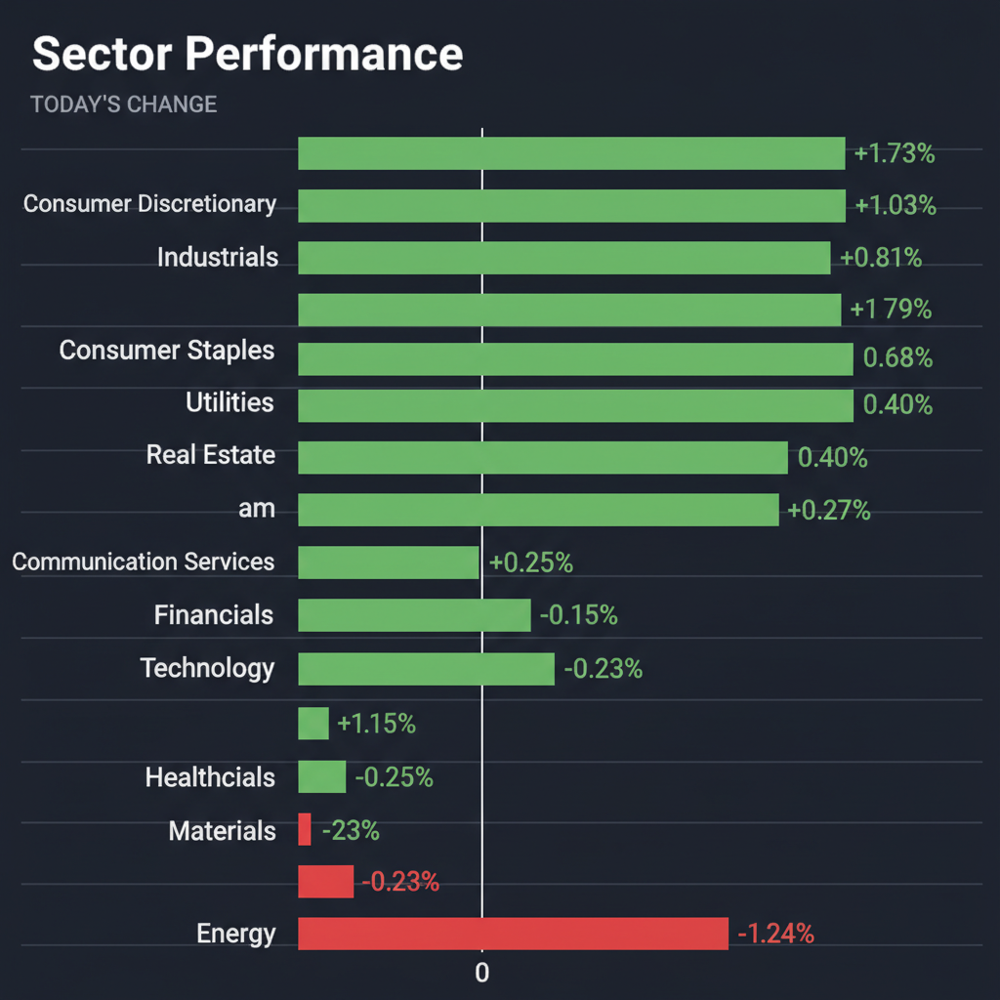
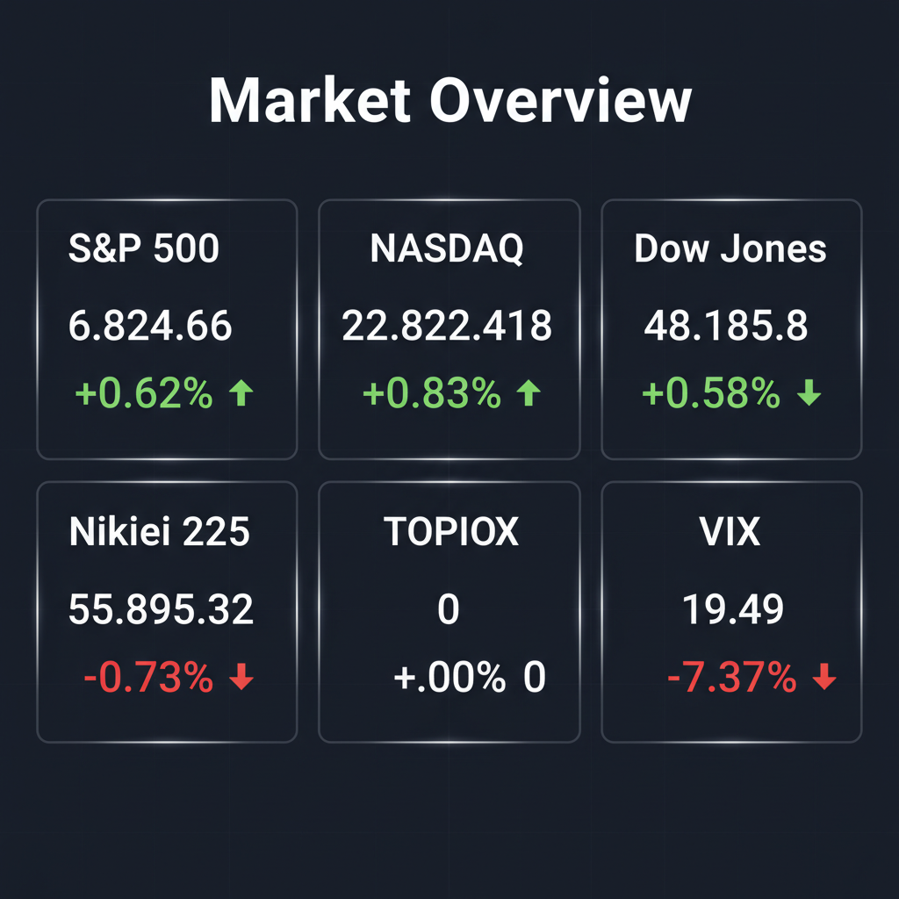

Daily Investment Report - 2026-04-10
Generated: 2026/4/10 8:21:56


本日の投資チームミーティングでの各エージェントの分析とディスカッションを踏まえ、投資家向けの最終レポートを作成いたしました。現在の市場に潜むリスクと機会を的確に捉え、具体的なアクションに繋げるためのガイダンスとしてご活用ください。
1. エグゼクティブサマリー
* 現在の市場は、AIインフラへの熱狂的な資金集中と、中東の地政学リスクに伴うインフレ再燃の懸念が複雑に交錯する過熱局面にあります。
* 主要指数は高値圏にありますが、VIX指数の不自然な低下や日米市場のダイバージェンス（乖離）が観測されており、ボラティリティ急増への厳重な警戒が必要です。
* 投資家は過大評価された大型株への依存を減らし、インフレ耐性を持つ実体経済セクターや、確実なキャッシュフローを生むニッチトップの中小型株へ資金をローテーションすべきです。
2. 注目銘柄リスト
強気（買い推奨）
*
ドーン（2306） [時価総額: 数十億円規模]: 防災・防犯に特化したクラウドGISのニッチトップ企業です。大幅増益と配当増額を発表しており、解約率の低い強固な顧客基盤が安全マージンとして機能します。
*
インターアクション（7725） [時価総額: 200億円規模]: イメージセンサーの検査用光源装置で世界トップシェアを誇ります。売上規模に対して非常に大きい約23億円の大口受注を獲得しており、中長期的な収益の飛躍が期待できます。
中立（様子見）
*
Energy Vault Holdings, Inc. (NRGV) [時価総額: 数億ドル規模]: 日本市場における850MWの大規模エネルギー貯蔵プロジェクトの買収は爆発的な成長の起爆剤となり得ます。しかし、インフラ構築特有の先行投資による資金燃焼リスクがあるため、次期決算のキャッシュフロー状況を確認するまで中立とします。
弱気（警戒）
*
Salesforce (CRM) / Adobe (ADBE) [大型株]: 汎用AIの台頭によりコア事業の優位性が陳腐化するリスクを抱えています。現在の高金利環境下において、これまでの高バリュエーションを正当化することは難しく、マルチプル縮小（株価の下落）が警戒されます。
3. セクター推奨ランキング
*
1位：エネルギー（XLE）
中東の地政学リスク（ホルムズ海峡の実質封鎖）とそれに伴う原油高騰に対する最強のインフレヘッジとなります。足元の短期的な下落は、絶好の押し目買いの機会です。
*
2位：資本財（XLI）
AIインフラ構築に伴う半導体製造装置への投資増に加え、各国がエネルギー安全保障や防衛を急ぐ中、インフラ関連事業が直接的な恩恵を受けます。
*
3位：公益事業（XLU）
AIの普及に伴うデータセンターの莫大な電力需要と、クリーンエネルギーへのパラダイムシフトにより、長期的に極めて安定した収益基盤となります。
*
4位：一般消費財（XLY）
エネルギー価格の高騰とインフレの強含みは、遅行して消費者の実質所得を減少させます。コスト増加を価格転嫁しきれない企業の利益率低下（マージン・スクイーズ）が強く懸念されます。
*
5位：ソフトウェア（SaaS関連）
市場の資金が「ソフトウェア」から「物理インフラ（ハードウェア）」へローテーションしており、高金利の長期化はレガシーSaaS企業の成長期待に深刻なダメージを与えます。
4. 今週の注目イベント
*
数日以内: トランプ大統領がNATO諸国に求めた「ホルムズ海峡の安全確保に関する誓約」の回答期限および中東情勢のヘッドライン。
*
随時: 米司法省（DOJ）によるNFLのメディア権パッケージに対する反トラスト法（独占禁止法）調査の進捗発表。
*
随時: 丸紅や第一生命に続く、国内企業による資本効率改善に向けた「攻めの不動産オフバランス戦略」の追加発表。
5. リスク要因
*
FRBの「利上げ再開」リスクとスタグフレーション: 安定した労働市場とエネルギー起因のインフレ再燃が重なることで、中央銀行が金利を急激に引き上げざるを得なくなる最悪のシナリオ。
*
VIX指数の低下が示す「極度の油断（コンプラセンシー）」: 市場がテールリスクを完全に過小評価しており、地政学的な悪材料が一つ出ただけで大規模なフラッシュ・クラッシュ（瞬間的暴落）を引き起こす土壌が形成されています。
*
特定銘柄への過剰な流動性集中: キオクシアの連日1兆円超の商いや、一部のAIハードウェア株に対する歴史的な資金偏重は、成長期待が剥落した際に巨大な巻き戻し（バブル崩壊）を招きます。
*
マージン・スクイーズの直撃: 原油高や物流コストの増大を製品価格に転嫁できない小売・製造業において、急激な業績悪化が発生するリスク。
6. アクションアイテム
*
キャッシュポジションの拡充: 株式へのエクスポージャーを現在の水準から20〜30%程度削減し、MMFなどの流動性の高い現金等へ移して相場の急落に備える。
*
テールリスク・ヘッジの実行: VIX指数が19台と低い現在のうちに、VIXのコールオプションや主要指数（S&P500等）のプットオプションを購入し、安価な保険をかける。
*
厳格なストップロスの設定: 新規エントリーや既存の買いポジションに対し、直近の押し目や20日移動平均線のやや下に逆指値を設定し、損失を機械的に限定する。
*
ポートフォリオのローテーション: 高PERのソフトウェア株や割高な一般消費財セクター（Costco等）で利益確定を行い、インフレ耐性のあるエネルギー株や、配当増額を発表した業績堅調な中小型株（ドーン等）へ資金を振り向ける。